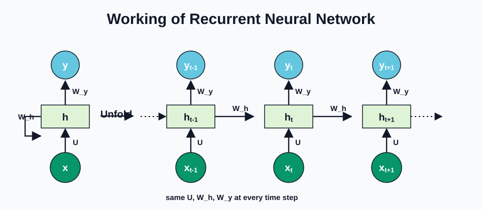
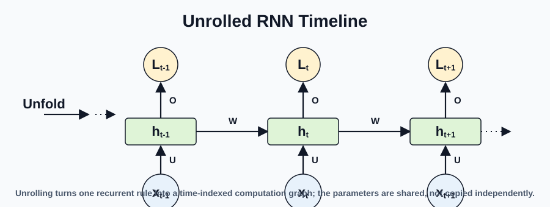
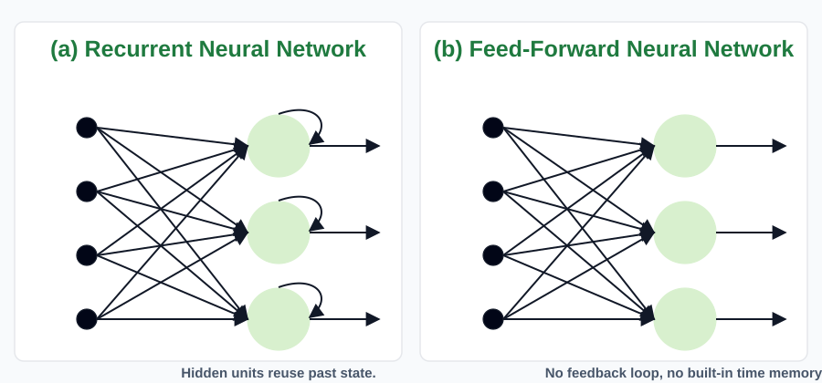
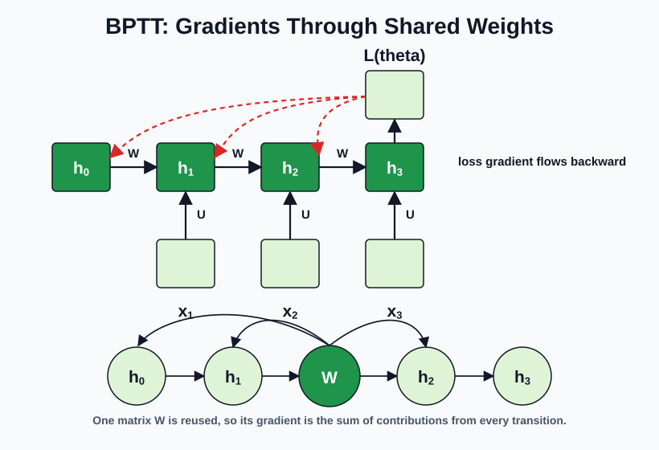
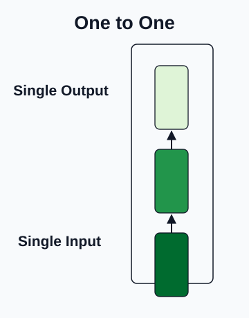
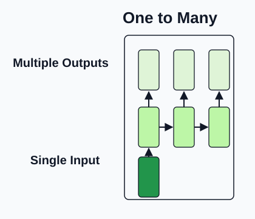
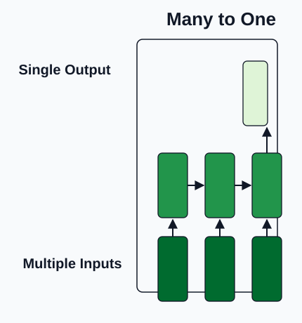
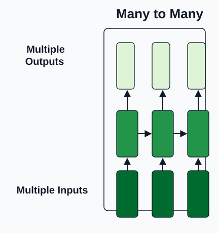

🔄 RNN循环神经网络
Recurrent Neural Networks
RNNs are the first deep-learning tool in this course that treats order as part of the data: speech frames, words, videos, weather, and financial traces all arrive one step at a time.
1. Concept Understanding
A recurrent neural network models a sequence $x^{(1)}, x^{(2)}, \ldots, x^{(T)}$ by carrying a hidden state $h^{(t)}$ forward through time. The state is a learned summary of what the model has seen so far.
2. Plain-English Explanation
Imagine reading a sentence while keeping a sticky note beside you. After each word, you update the sticky note with the important bits. You do not reread the whole sentence from scratch; you use the note plus the next word.
That sticky note is $h^{(t)}$. The update rule is the same every time, like the same reading habit applied word after word.
3. Core Intuition
The hidden state creates a path for information to flow from earlier inputs to later outputs. Parameter sharing is what makes the model scalable: the recurrence learned from one position can be reused at every other position, and it lets the model handle sequence lengths it never saw during training.
The downside is also visible from the unrolled graph. A long sequence becomes a very deep computation graph, and the same recurrent Jacobian appears repeatedly in gradients. Repeated multiplication is the source of vanishing and exploding gradients.
In encoder-decoder setups (e.g. machine translation), the entire input sequence is squeezed into a single fixed-size hidden state before decoding begins — the information bottleneck that later motivated attention.



The circle or loop does not mean there are infinitely many different parameters. It means the same transition rule is applied repeatedly. When we unroll the loop, we draw many time steps, but $U$, $W$, and $O$ are shared across those steps.
Reference: GeeksforGeeks, Introduction to Recurrent Neural Network.
4. Key Equations
What it does. The model reads the sequence one step at a time. Current input plus previous memory becomes new memory; the output is computed from that new memory.
What it does. Each time step first mixes current input and old hidden state, applies an activation, then optionally produces an output distribution.
What it does. Backpropagation through time multiplies many local sensitivity matrices. Products with norms below 1 shrink; products with norms above 1 can explode.

5. Worked Examples
6. Problem-Solving Tips




- First identify whether the problem is one-to-one, one-to-many, many-to-one, or many-to-many. Then separately ask whether it is aligned (output length = input length, one $y^{(t)}$ per $x^{(t)}$, e.g. POS tagging) or unaligned (lengths differ, e.g. machine translation — needs an encoder-decoder).
- Draw the unrolled graph before differentiating. Put one copy of the state update at each time step.
- Mark shared parameters with the same symbol at every step; their gradients add across time.
- For BPTT, compute local derivatives, then multiply along paths and sum over every path that reaches the shared parameter.
- Teacher forcing during training: feed the ground-truth $y^{(t)}$ as the input at step $t+1$ instead of the model's own noisy prediction. This keeps the recurrence on the data distribution while the model is still bad at predicting.
- Gradient clipping for exploding gradients: cap $\|\nabla\|$ at some threshold before the optimizer step. A heuristic — it tames explosion but does not fix the vanishing side.
7. Common Mistakes
- Treating $W_{hh}$ at different time steps as different parameters.
- Forgetting that $h^{(t)}$ depends on all earlier inputs through $h^{(t-1)}$.
- Explaining vanishing gradients only as "sigmoid is small"; the repeated product through time is the deeper reason.
- Dropping one gradient path when a parameter is reused multiple times.
8. Exam Focus
- Write the generic RNN equations and explain parameter sharing.
- Unroll a short RNN and compute a BPTT derivative by hand.
- Explain why classical RNNs struggle with long-term dependencies.
- Describe bidirectional RNNs: run one forward pass and one backward pass and concatenate $h^{\rightarrow}_t,\, h^{\leftarrow}_t$ at each step so each output sees both past and future context.
- Explain why RNNs are not easily parallelizable: $h^{(t)}$ depends on $h^{(t-1)}$, so time steps must run sequentially — Transformers replace the recurrence with self-attention precisely to break this bottleneck.
- Connect RNN weaknesses to the motivation for LSTM/GRU and later self-attention.
9. Quick Checklist
- State $h_t$ is memory; weights are shared across $t$.
- BPTT = ordinary backprop on the unrolled graph.
- Shared-parameter gradients are summed over time.
- Long products of Jacobians cause vanishing/exploding gradients.
循环神经网络 · RNN
RNN 是课程里第一个真正把“顺序”放进模型结构里的 deep learning 工具：文本、语音、视频、天气、金融序列都不是一堆互相独立的点。
1. 概念理解 / Concept Understanding
RNN 用隐藏状态 $h^{(t)}$ 处理序列 $x^{(1)},x^{(2)},\ldots,x^{(T)}$。$h^{(t)}$ 可以理解为“到第 $t$ 步为止，模型记住了什么”。
2. 大白话理解 / Plain-English Explanation
把 RNN 想成读一句话时旁边放一张便利贴。每读一个词，你就更新一下便利贴：哪些信息重要，哪些可以忘掉。
这张便利贴就是 $h^{(t)}$。更新便利贴的方法每一步都一样，这就是 parameter sharing。
3. 核心直觉 / Core Intuition
hidden state 给早期输入到后期输出开了一条信息通道。参数共享让模型能处理任意长度序列：在位置 3 学到的“如何更新记忆”，位置 30 也能用，甚至训练时没见过的长度也能跑。
麻烦也来自这里。把 RNN 在时间上 unroll 之后，长序列就是很深的计算图；梯度会反复乘相似的 Jacobian，于是容易 vanishing / exploding。
在 encoder-decoder 结构里（例如机器翻译），整个输入序列要被压缩成一个固定大小的 hidden state 再开始解码 —— 这就是后来推动 attention 出现的 information bottleneck。
图里的 loop 不是说有无限多个参数，而是说“同一个 transition rule 重复使用”。展开以后虽然画了很多时间步，但 $U$、$W$、$O$ 在所有时间步都是共享的。
4. 核心公式 / Key Equations
这个公式在做什么？ 模型按顺序读 sequence：当前输入加旧记忆，变成新记忆；输出再由新记忆算出来。
这个公式在做什么？ 每一步先混合 current input 和 old hidden state，过 activation 得到新 hidden，再按需要输出预测。
这个公式在做什么？ BPTT 会连续乘很多 local sensitivity matrices。Norm 小于 1 时越乘越小，gradient vanish；norm 大于 1 时可能 explode。
5. 例题讲解 / Worked Examples
6. 解题技巧 / Problem-Solving Tips
- 先判断任务类型：one-to-one、one-to-many、many-to-one、many-to-many。再单独问一句：是 aligned（输出长度 = 输入长度，每个 $x^{(t)}$ 对一个 $y^{(t)}$，例如 POS tagging）还是 unaligned（长度不同，例如机器翻译 —— 需要 encoder-decoder）。
- 求导前先画 unrolled graph，每个时间步一份状态更新。
- 共享参数要用同一个符号标出来；它在多个时间步的梯度要累加。
- 做 BPTT 时，先写 local derivative，再沿路径相乘、对路径求和。
- 训练时用 teacher forcing：把 ground truth $y^{(t)}$ 直接当作下一步的输入，而不是用模型自己噪声很大的 prediction。这样在模型还预测不准的早期阶段，循环不会跑偏。
- 梯度炸了用 gradient clipping：在 optimizer step 之前把 $\|\nabla\|$ 限制在阈值之内。这是经验做法，只能压制 exploding，不能 解决 vanishing。
7. 常见错误 / Common Mistakes
- 把不同时间步的 $W_{hh}$ 当成不同参数。
- 忘记 $h^{(t)}$ 通过 $h^{(t-1)}$ 依赖所有更早输入。
- 只说“sigmoid 导致梯度小”，却没说明 repeated product 才是核心机制。
- 参数复用时少算一条 gradient path。
8. 考试重点 / Exam Focus
- 能写 RNN 通用公式，并解释 parameter sharing。
- 能 unroll 短 RNN，手算一个 BPTT derivative。
- 能解释 long-term dependency 为什么难学。
- 能讲 bidirectional RNN：一条正向、一条反向，每步把 $h^{\rightarrow}_t,\, h^{\leftarrow}_t$ 拼起来，让输出同时看到过去和未来 context。
- 能说清 RNN 难并行 的原因：$h^{(t)}$ 依赖 $h^{(t-1)}$，时间步必须串行；Transformer 用 self-attention 取代递归就是为了打破这个瓶颈。
- 能把 RNN 的弱点连接到 LSTM/GRU 和 self-attention 的动机。
9. 速记清单 / Quick Checklist
- $h_t$ 是 memory；参数跨时间共享。
- BPTT = 在 unrolled graph 上做普通 backprop。
- 共享参数的梯度要 across time 相加。
- 长 Jacobian 乘积导致 vanishing / exploding gradients。